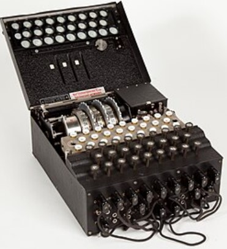

Información sobre la maquina engima, piezas y más.
La máquina Enigma tenía 26 teclas y 26 focos (uno por cada letra del alfabeto alemán, de la A a la Z), de modo que al pulsar una tecla se encendía una letra distinta en el panel de lámparas, indicando así la letra cifrada. En cuanto a los rotores, cada máquina venía normalmente con 5 rotores disponibles (aunque en los modelos navales posteriores llegaron a ser 8), pero solo se usaban 3 a la vez en el ejército de tierra y la fuerza aérea, mientras que la marina alemana a veces empleaba 4; el operador elegía qué rotores colocaba y en qué orden según la clave del día, lo que añadía una capa enorme de seguridad. Cada rotor contenía 26 contactos (uno por cada letra), cableados internamente de forma distinta en cada rotor. Y respecto a su funcionamiento, los rotores no se mantienen estáticos sino que son dinámicos: giran con cada tecla pulsada, como un odómetro, de manera que el rotor derecho avanza una posición cada vez y, al completar una vuelta, hace avanzar el del medio, y así sucesivamente; esto provoca que la sustitución cambie con cada letra, dando lugar a un cifrado polialfabético.

¿La maquina Enigma usaba Wi-Fi?
No, la Enigma no se comunicaba con Wi-Fi ni tenía ningún tipo de conexión inalámbrica: era un dispositivo electromecánico autónomo que solo cifraba localmente, y los alemanes transmitían los mensajes ya cifrados por radio (código Morse) o por cable (telégrafo), descifrándolos en el otro extremo con otra Enigma configurada con la misma clave del día.
¿Qué es cifrar y descifrar, también conocido como encriptar y desencriptar?
Cifrar (encriptar) es transformar un mensaje legible en uno ilegible mediante una clave secreta, y descifrar (desencriptar) es el proceso inverso, recuperar el mensaje original a partir del cifrado y la clave; en la Enigma ambos procesos eran el mismo mecanismo simétrico, pues teclear el texto cifrado en una máquina con la configuración correcta devolvía el mensaje en claro.
Descifrado de un texto con el método César:
KROD EXHQRV GLDV, FLIUDGR FRQ PHWRGR FHVDU OR LQFUHLEOH GH HVWH FLIUDGR HV TXH UHDOPHQWH OR LQYHQWR MXOLR FHVDU HO IDPRVR OLGHU PLOLWBU B SROLWLFR URPDQR. VH GLFH TXH MXOLR FHVDU XVDED HVWH PHWRGR SDUD SURWHJHU VXV FRPXQLFDFLRQHV PLOLWDUHV.
HOLA BUENOS DIAS, CIFRADO CON METODO CESAR LO INCREIBLE DE ESTE CIFRADO ES QUE REALMENTE LO INVENTO JULIO CESAR EL FAMOSO LIDER MILITYR Y POLITICO ROMANO. SE DICE QUE JULIO CESAR USABA ESTE METODO PARA PROTEGER SUS COMUNICACIONES MILITARES.